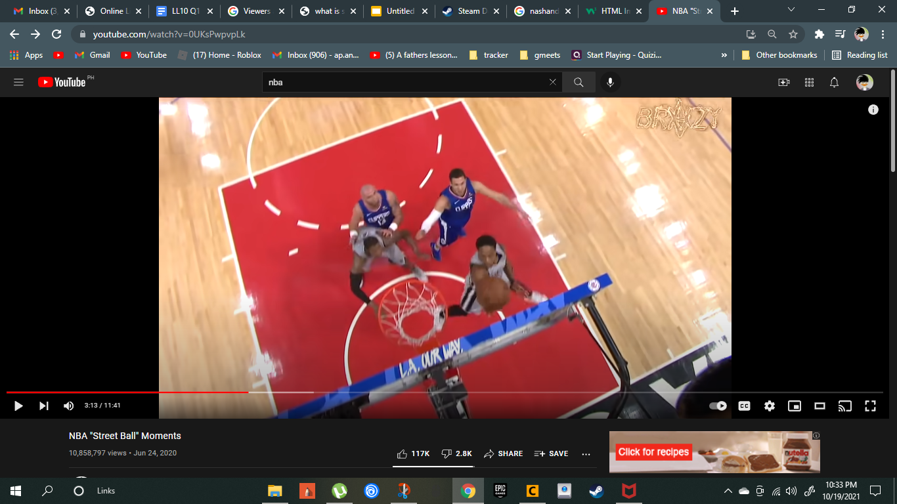

What is streaming
Definition of Streaming
Types of Streaming Content
Platforms used for streaming
Viewers analysis for each streaming category
Need of viewers
Characteristics of a good stream
Types of Streaming category
Ethan jarverik arcellana
Streaming categories are a choices of streaming that you can pick from a streaming platform
Gaming Category
gaming category focuses on game streams, events, stories or theories
about the game that is being shown
game streams are commonly watched on twitch and youtube
read more

Sports
Sports category focuses on the latest updates about sports
and it focuses on sports and the latest news and issues about the sport
they are commonly watched on tv's or other streaming apps
read more
News category
News category focuses about the public and the people or mostly spreading fake news and they talk about the government and they talk about an issue that are currently
happening in the country to make people be aware
read more